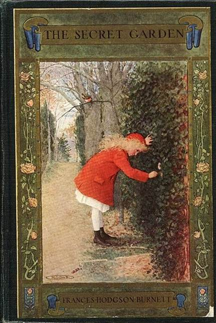

目录
Ø 五行打油诗
Ø 查尔斯·道奇森
Ø 新宿丸井MEN
Ø 新宿御苑
Ø 鲁滨逊漂流记
Ø 十五少年漂流记
Ø 蝇王
Ø 沙仙活地魔
Ø 花园神社
Ø 呼啸山庄
Ø 秘密花园
Ø 红色帐篷剧场
Ø 你若见过新宿
Ø 全部gift
出典：
五行打油诗，出自18世纪英国著名诗人Edward Lear，诗歌的1、2、5行和3、4行相互押韵。英译译者有注明，因为没法在保持押韵的情况下按原意翻译灰流的即兴诗歌，所以他们自己进行了一些调整：
以下是英译者注明的内容：
日文原文： 日语罗马字:
その名も高き チェシャア sono na mo takaki, chensha
猫お好きなものは 女の子 neko o-suki na mono wa, onna no ko
アリスに ぞっこん arisu ni, zokkon
明日は 結婚 ashita wa, kekkon
ドジスン先生「いかん！」と頑固 dojisun-sensei "ikan!" to ganko
意译： 调整后：
That famous Cheshire cat There once was a big Cheshire cat
liked little girls. Who liked girls with a fondness for hats
He fell for Alice. To Alice he fled
Tomorrow they marry. And tomorrow they wed
Mr. Dodgson gave a firm "No!" But Dodgson said "Hands off, you prat!"
查尔斯·路特维奇·道奇森（Charles Lutwidge Dodgson），笔名路易斯·卡罗（Lewis Carroll），英国作家、数学家、逻辑学家、摄影家，以儿童文学作品《爱丽丝梦游仙境》与其续集《爱丽丝镜中奇遇》而闻名于世。
《爱丽丝漫游仙境》是卡罗尔兴致所致，给友人的女儿爱丽丝所讲的故事，写下后加上自己的插图送给了她。后来在朋友鼓励下，卡罗尔将手稿加以修订、扩充、润色后，于1865年正式出版。这部童话以神奇的幻想，风趣的幽默，昂然的诗情，突破了西欧传统儿童文学道德说教的刻板公式，此后被翻译成多种文字，走遍了全世界。卡罗尔后来又写了一部姐妹篇，叫《爱丽丝镜中奇遇记》，并与《爱丽丝漫游奇境记》一起风行于世。此外卡罗尔还著有诗集《The Hunting of the Snark》、《Jabberwocky》等作品。
Figure 1. 路易斯·卡罗，摄于1863年
² 新宿丸井MEN大厦
从背景可以判断出，这里是新宿丸井MEN大厦，是东京都内十分少有的，男士专门时尚购物大厦。从服装到鞋帽、包、首饰、香水、内衣裤、伞等男士用品种类丰富。聚集了很多海外买不到的日本国产品牌为店内一大特色。店内有着BLACK LABEL crestbridge、TAKEO KIKUCHI、HARE、COMME CA MEN platinum、PORTER、Master-piece等人气品牌商品。
丸井（OIOI、0101）是一间经营连锁式时装大楼等商场的日本公司，不属于日本百货店协会成员。其店铺主要售卖时装，还有家具、杂货、眼镜、宝石等。1960年发行日本最初的信用卡（现在“エポス卡”）。
Figure 2. 新宿丸井MEN
出自《肯辛顿公园的彼得·潘》，原作中在所罗门的命令下，鸟类把自己的食物给了彼得潘。因为彼得潘不吃虫子，他们用喙带来了面包给他吃。
小田急新宿MYLORD百货大楼，位于小田急线新宿站南口检票口附近，是一座汇集了时装、杂货、化妆品、餐厅和咖啡厅等店铺的综合商业设施。由于大楼就在车站正上方，即使是下雨天也可以安心购物。
LUMINE是在日本的大型购物中心，拥有约260家的店铺。店铺类型从生活用品、流行时尚衣物到咖啡餐厅一应俱全。地点也非常的便利，就座落于JR新宿车站旁，在新宿是非常有地标性的购物中心，也是Mayuzumi看电影的位置。
Figure 3. 小田急新宿MYLORD和Lumine
原文是“御苑”，指新宿御苑，是日本东京都横跨新宿区与涩谷区的庭园，面积58.3公顷。该处在江户时代为内藤家的宅地；其后成为宫内厅管理的庭园，现在则属环境省管辖的国民公园。
Figure 4. 新宿御苑风景
《鲁滨逊漂流记》，是英国作家丹尼尔·笛福于1719年4月25日所著的作品，享有英国第一部现实主义长篇小说的头衔。小说讲述了一位海难的幸存者鲁滨逊在一个偏僻荒凉的热带小岛-特立尼达拉岛上度过28年的故事，而其伙伴是主人公从食人族手中救下的一个被俘虏的土著人。
Figure 5. 鲁滨逊漂流记
《十五少年漂流记》，是法国小说家朱尔·凡尔纳（Jules Gabriel Verne）的小说，1888年出版，多次被改编成动画、电影、电视剧。内容描述15名儿童和少年在无人岛生活了两年，并成功生还的冒险故事。游戏中提到了它的原作标题《两年假日》。
Figure 6.《十五少年漂流记》插画
《蝇王》是英国小说家威廉·杰拉德·戈尔丁爵士发表于1954年的寓言体长篇小说。讲述了被困在荒岛上的儿童，在完全没有成人的引导下，如何建立起一个脆弱的文明体系，而这个体系又是怎样被人类本性中的野蛮和暴力摧毁的。小说描绘了一个孩子们自相残杀的悲剧故事。
Figure 7. 《蝇王》中扮成土著人的孩子们
“沙仙”莎米亚咚（Psammead），高龄八千岁的许愿生物，出自《沙仙活地魔》（Five Children and It），是由英国作家Edith Nesbit创作的一部儿童奇幻小说，于1902年发行初版。
故事主要讲述五位小孩意外从沙中挖出一个许愿怪物“莎米亚咚”，每天满足他们一个愿望。英国作家J·K·罗琳曾表示《沙仙活地魔》是她创作《哈利波特》系列小说的灵感来源之一。
Figure 8. 《沙仙活地魔》TV版剧照
花園神社，位于新宿五丁目的神社。 神社供奉着三位城市的守护神，稲魂命（Inari the fox），日本武尊（Yamato Takeru），以及受持神。
神社位于新宿的中心，有各种团体定期举行活动，并且在新宿的文化活动中发挥作用。 色彩鲜艳的神社除了礼拜活动之外，还被用作休息和聚会的场所。
官网：http://www.hanazono-jinja.or.jp/mt/cms/webdir/index.html
Figure 9. 神社入口的大鳥居
《呼啸山庄》，英语文学经典名著，英国文学家艾米莉·勃朗特（Emily Brontë）的小说，也是她生前唯一的一部小说。虽然《呼啸山庄》在现代普遍被视为英语的经典小说，但在那个时代评论家对这本小说的评论非常两极化，被认为是具有争议性的作品，因为它对精神和肉体有相当赤裸残酷的描写，而且它挑战到了维多利亚时代日积月累对宗教的伪善、道德观、社会阶级和性别不平等的现况。
Figure 10. 《呼啸山庄》图书封面
《秘密花园》是英国作家弗朗西丝·霍奇森·伯内特创作的一部小说，于1909年出版，被广泛的认为是儿童文学的经典代表之一。
故事讲述了性情古怪孤僻的小女孩玛丽・伦罗克斯的父母双亡后，生活在姨父神秘阴沉的大房子里，一次神奇的经历，使玛丽闯入久已禁闭且荒芜的花园。玛丽、农家小子迪肯和常年被关在阴暗房间里病态的少爷柯林，找到了开启快乐的钥匙，和花园经历了一次诗意的复活。
它是近百年来畅销不衰的经典儿童小说，多次被改编成影视作品，并在中国有多个图书版本。

Figure 11. 《秘密花园》1911年版
红色帐篷，是60年代著名导演和演员唐十郎“状况剧场”（Mobile Theatre）的标志。1967年~1968年间，“状况剧场”在花园神社内进行演出活动，后因投诉撤出。
Figure 12. 复原后的红色帐篷
“状况剧场“宣传语的其中一部分。全文如下：
「お仙」見たけりゃ
今見ておきゃれ
母ァ殺して
銭つくれ
新宿見たけりゃ
今見ておきゃれ
じきに 新宿 原になる
大致翻译：
你若看过“阿仙”
恳请多瞧一眼
杀了妈妈
做成铜钱
你若见过新宿
恳请多瞧一眼
马上 新宿 会变成荒原
² 这章出现的全部gift：
最初，稻荷神（Inari the fox）是与谷物相关的神的通称，其差事是狐。被刈谷唤醒并吸收，替换了原本信使的gift。在第三章中先变成了骑士迎敌，后变成了一只鹿逃跑。
“Hijinks”，英文翻译狂欢作乐，出自红色帐篷的表演艺术，替换了九月原本的gift“胡迪尼”。
龙，出典不明。代表着革命（“Revolution”），所以能和etrangere的gift相互共鸣。最后被黛薰吸收，替换了原本的白日梦gift。